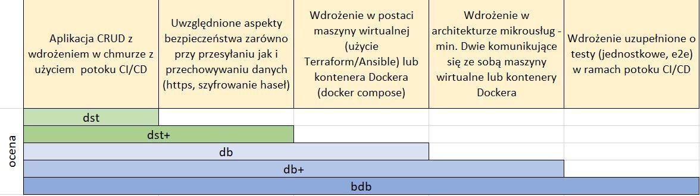

1 Organizacja zajęć
Zajęcia odbywają się w trybie hybrydowym.
Planowany program zajęć jest następujący:
| Tydzień zajęć | Temat | Uwagi |
|---|---|---|
| 1 | Zajęcia organizacyjne | |
| 2-3 | Wprowadzenie do linuxa | |
| 4-5 | Azure | |
| 6-7 | CI/CD | Deklaracja wyboru technologii chmurowej |
| 8-9 | Docker | |
| 10-11 | Ansible | |
| 12-13 | Terraform | |
| 14-15 | Prezentacja projektów |
1.1 Materiały
Niniejszy skrypt zawiera najważniejsze zagadnienia realizowane podczas zajęć. W celu uzupełnienia wiedzy można sięgnąć do następujących zasobów:
1.2 Zaliczenie
Na zaliczenie należy przygotować projekt grupowy polegający na przygotowaniu wdrożenia wybranej aplikacji w wybranej technologii chmurowej. Ocenie podlega sprawozdanie z przeprowadzonego wdrożenia. W połowie semestru studenci dokonują deklaracji wybranej technologii chmurowej.
Wymagania projektowe:

Sprawozdanie z projektu ma zostać załadowane na platformę moodle. Podczas dwóch ostatnich tygodni zajęć odbędzie się prezentacja wykonanych projektów.
1.3 Rejestracja na Azure Portal
Krok 1: Założenie konta Azure for Students
Otwórz: https://azure.microsoft.com/en-us/free/students/
Kliknij “Start Free” (lub coś podobnego)
Zaloguj się kontem uczelnianym
❗ Nie potrzeba karty kredytowej!
Krok 2: Pierwsze kroki w Azure Portal
Otwórz: https://portal.azure.com
Zaloguj się tym samym kontem
Krok 3: Sprawdzenie subskrypcji
W wyszukiwarce wpisz: “Subscriptions”
Kliknij na swoją subskrypcję “Azure for Students”
Zobacz swoje 100$ (lub €) kredytów
Krok 4: Centrum edukacyjne
W wyszukiwarce wpisz: “Education”
Przejdź do usługi “Microsoft Azure Education”
Zobacz podgląd subskrypcji oraz materiały szkoleniowe
1.3.1 Instalacja Azure-CLI
# instalacja azure-cli na macOS
brew update
brew install azure-cli
# lub na windows
winget install --exact --id Microsoft.AzureCLI
# Zweryfikuj instalacje
az version
# Zaloguj do Azure
az login
# Zaloguj się w otwartym oknie przeglądarki i wybierz subskrypcje w terminalu1.3.2 GitHub Developer Pack
❗ Wymagana wazna legitymacja legitymacja!
❗ Wymaganay telefon!
❗ Weryfikacja moze zająć do dwóch tygodni!
- Otwórz: https://education.github.com/pack
- Kliknij “Sign Up for Student Developer Pack” (lub coś podobnego)
- Zaloguj się do prywatnego konta GitHub (lub załóż jeśli nie masz)
- Idź do *Emails pod sekcją Access
- W Add email address dodaj email uczelniany
- Przejść do Payment information pod Billing and licensing
- Wypełnić swój adres w Billing information (nie trzeba podawać karty ale wniosek będzie odrzucony jak nie będzie adresu)
- Przejść do Password and authentication pod Access i wybrać enable two-factor authentication (wniosek będzie odrzucony jak tego nie będzie)
- Uzyć telefonu i jakiejś aplikacji (np. Microsoft Authenticator - ja używam “Passwords” na iphonie)
- Wybierz Education benefits pod sekcją Access -> Billing and licensing
- Wybierz Start an application
- Wypełnij formularz:
- Select your role
- Name of your school (University of Silesia in Katowice)
- School email address (***@us.edu.pl)
- Kontynuuj zgodnie z instrukcjami (jest możliwość dodania tylko jednego zdjęcia legitymacji, zatem trzeba zrobić zdjęcie przodu i tyłu i skleić je razem)
- Po złożeniu wniosku trzeba czekać, może to zająć tydzień lub dwa ale trzeba obserwować czy nie zostanie odrzucony
- UWAGA! Zauważyłem błąd na GitHub. Jeśli aplikacja zostanie odrzucona (a bardzo możliwe, ze będzie) to nie można rozpocząć nowej. W takim wypadku warto spróbować zmienić zdjęcie swojej legitymacji - zrobić nowe np. w pionie zamiast w poziomie)
- Po zaakceptowaniu zainstalować Visual Studio Code
- Zalogować się do konta na GitHub przez VS Code (w lewym dolnym rogu)
- Zainstalować dodatek GitHub Copilot Chat (wyszukać w Extensions po lewej)
- Warto nauczyć się Copilota tutaj: https://learn.microsoft.com/en-us/training/paths/copilot/?source=recommendations